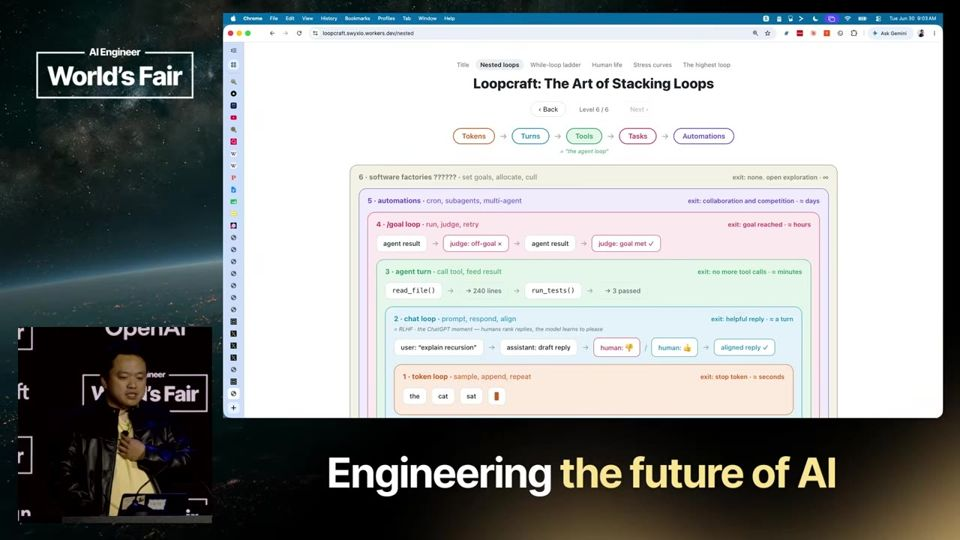
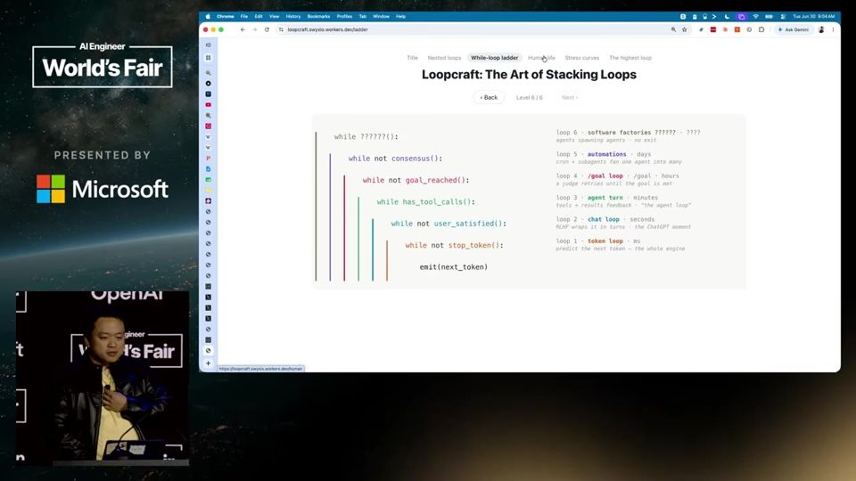

The Highest Loop
Engenheiro de IA escolhe em qual camada de loops trabalha e sobe ou desce conforme precisa de escala ou de confiabilidade.
Em 3 frases
swyx resume a evolução da IA em etapas (token, chat, ferramentas, metas, automações) e propõe ver o trabalho como uma pilha de loops, um dentro do outro.
Ele diz que a habilidade central do AI engineer é saber em qual loop está, subir um nível para ganhar produtividade e descer um nível para corrigir falhas de confiabilidade.
Ele fecha dizendo que o loop mais alto é a reunião de pessoas, como a conferência, para decidir qual será o próximo loop, e convida o público a levar isso para suas equipes.
Antes de ler
Da token ao loop de automação
swyx conta a história em passos curtos. Primeiro veio o token, depois o chat, depois o uso de ferramentas, depois a definição de metas. Hoje o foco está em automações, com cron jobs (tarefas agendadas) e loops. O dia também trata de software factories (fábricas de software), com loops empilhados.
01:17 A sequência de etapas que leva ao foco atual em loops.
Loopcraft: subir e descer na pilha
Segundo swyx, definir em quais loops você trabalha é uma habilidade central. Se o nível de abstração está certo, suba um loop para ganhar produtividade e escalar inferência. Se aparecem bugs, desça um loop e trabalhe em baixo nível para ganhar confiabilidade. Ele publicou o ensaio Loopcraft sobre isso.

O loop humano
Ele faz uma analogia com a vida. Começa no batimento cardíaco, depois vem falar, usar ferramentas, trabalhar (comer, dormir, programar, repetir) e formar times pequenos, famílias e empresas. O ponto final é a civilização e a inteligência coletiva. Para ele, o que se faz em código já vale para a vida.

Mais 2 ideias deste talk
IA saindo do código
swyx afirma que agentes que funcionam em um domínio estão generalizando neste ano. A conferência ganhou trilhas verticais, como saúde, finanças e GTM (go-to-market, entrada no mercado), e uma trilha de forward deployed engineering. A tese é que a IA finalmente se espalha para além de programação.
04:26 As novas trilhas indicam o que o organizador vê como próxima fronteira.
O loop mais alto
O loop mais alto é aquele em que pessoas se reúnem para descobrir qual é o próximo loop, o loop que cria loops. Por isso a equipe organiza summits em várias cidades e busca parceiros locais. O pedido final é que cada pessoa leve seu processo de gerar loops para o time e para a vida.
05:59 A tese final do talk, ligada ao modelo de negócio da conferência.
É uma abertura de conferência, então boa parte é pitch do próprio evento: curva de ingressos, convite para comprar cedo e busca de parceiros pagantes para summits. A pilha de loops é uma metáfora útil, mas ele não mostra caso real, métrica ou critério para decidir quando subir ou descer. A afirmação de que agentes estão generalizando para outras áreas não vem com evidência no vídeo. swyx organiza a conferência, o que cria interesse em valorizar o tema.
O que fazer com isso
- Liste os loops em que você trabalha hoje (um prompt, um agente, uma automação agendada, a rotina do time) e marque em qual deles está o gargalo.
- Quando um fluxo com IA falhar, desça um nível: leia o log e o prompt daquele passo antes de trocar de ferramenta.
- Quando um fluxo estiver estável, suba um nível: transforme a tarefa repetida em automação agendada ou em um agente com meta clara.
- Se quiser aprofundar, leia o ensaio Loopcraft citado por swyx, que aparece como referência no talk.